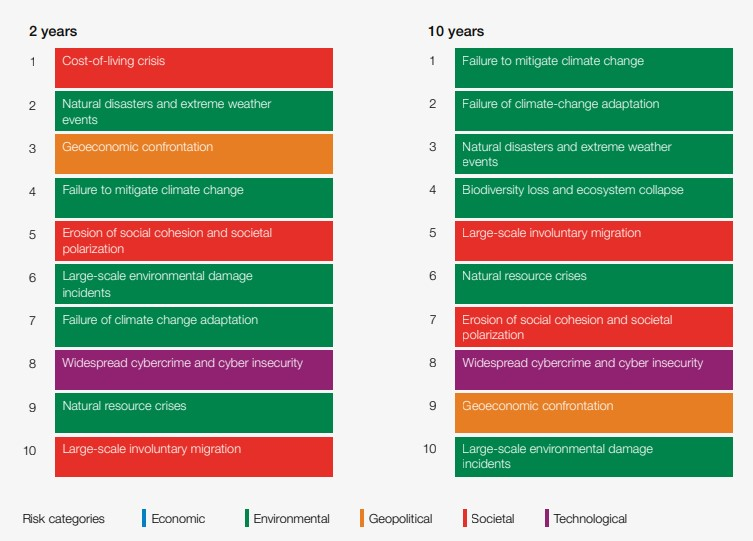

社會共融願景：發揮仁寶人關懷心與生命實踐力，以「心幸福」的企業力，創造「新幸福」社會。
感謝所有參與仁寶社會關懷活動的同仁，依據實際參與人數統計，2022年度參與人次較2021年度成長12.8％，增加到4,152人次。仁寶一直以來，鼓勵同仁自主參與志工服務，結合仁寶同仁們的慈善初心，推動各項關懷服務活動。 匯集大家的心幸福能量，希望能讓社會弱勢感受到多一些溫暖與及時的幫助。
仁寶的社會參與主要分為幾部份，一是支持集團「許潮英慈善基金會」對弱勢學童關懷及優質教育的專案投入（如圓夢飛翔計劃、創客計劃、兒童節圓夢心願禮物），另外一部份是仁寶電腦長期推動的社會關懷專案（如仁寶行動數位裝置捐贈、閱讀志工、仁寶陽光獎助學金、Golf人才培育專案），及不定期與學校、社區或ＮＧＯ（非政府組織， Non-Governmental Organization ） 社會團體的公益合作專案(如：2022年贊助屏東佳義國小才藝展演專案、內湖科技盃愛地球公益路跑、荒野協會的紅樹林濕地生態教育與肯納園的中秋募月餅~公益不能停…等活動)。可參閱仁寶永續報告書(註1)，每一年皆詳實揭露。
很多新進同仁不太認識「許潮英慈善基金會」(註2)，但是常常在仁寶公益活動公告或是每年的永續報告書中看到這個基金會的名字。「許潮英慈善基金會」創立就是為了延續金仁寶集團創辦人—老董事長許潮英先生生前的熱於助入、默默行善，關懷他人的善念，希望能匯聚金仁寶集團各企業的同仁們一起關懷弱勢的善能量，去幫助社會上更多需要關懷的兒童和獨居長者。
感謝每一年響應年終募款或不定期物資捐贈的仁寶同仁們，您們捐贈的善款和物資讓基金會能及時幫助到有需求的貧困家庭和學童。
許潮英慈善基金會蔡麗珠董事長曾說過：「貧窮不應該阻擋孩子快樂的成長以及學習才藝的機會，我們期待幫助更多有需要的下一代！」從急難救助，許爺爺獎助學金、讀報計劃、許潮英藝文班、圓夢飛翔計畫及社區銀髮老人的陪伴服務，更聚焦於弱勢兒童的專才發展。透過音樂、美術、體育等多元才藝教育學習，點亮孩子們的生命與未來。
仁寶電腦在2022年與基金會一同贊助「圓夢飛翔」的孩子，現就讀於體育大學的魏連軍國手出國訓練費用。而他也以優異表現為國爭光，3月26日在2023年世界盃有氧體操錦標賽葡萄牙賽事，榮獲男子單人金牌，得到台灣30年來的第一面金牌。
五月份即將展開的「2023圓夢飛翔計劃」，期待有您加入認助人的隊伍，讓更多弱勢孩子能有機會在世界的舞台上發揮其長才。登記連結：http://tpewww/pollsystem/ (註3)
仁寶電腦推動「仁寶閱讀志工專案」常達16年，每一年鼓勵更多的大專青年加入志工服務，幫助偏鄉社區學童提升閱讀能力、推動SDGs永續發展目標及社區文化傳承。贊助「袋鼠計劃」，與輔大偏鄉關懷中心合作實體社區課輔及師資培訓已邁入第５年；去年也支持輔大醫院辦聖誕健檢日活動，重視社區貧困居民健康照護。2023年第4年與高雄市立圖書館的偏鄉多元推廣公益合作，由贊助偏鄉圖書館活動，到支持行動書車和故事劇團，用AR活動走讀方式，提升學童閱讀興趣及對在地社區環境永續的重視。
邀您按讚加入仁寶電腦Compal CSR粉絲頁 (註4)，您會發現仁寶的伙伴們，一起默默參與了許多真心給予、分享幸福能量的活動。仁寶各社團及志工社(註5)、綠活健康社(註6)也歡迎更多同仁們加入。
世界經濟論壇(World Economic Forum, WEF)發布的「2023 全球風險報告」(註7)顯示，在全球未來2年最大風險「社會面-生活成本增加」及10年內最大風險「環境面-氣候行動失敗」。
|  |
| < Source：World Economic Forum Global Risks Perception Survey2022-2023 > |
面對全球經濟加速惡化及自然資源短缺的複合型風險，貧困家庭及弱勢族群維持基本生計加倍艱辛！鼓勵仁寶伙伴們持續落實工作與生活中每一個善意行動，邁向永續未來。
| 2023 COMPAL MISSION : Towards a Sustainable Future – Integrate sustainable development into R&D and mass production process to achieve the goal of green and carbon-reducing manufacturing. |
-----------------------------------------------------------------------------------------------------------------------------------------
相關資料 :
註1：仁寶永續報告書
註2：許潮英慈善基金會
註3：2023圓夢飛翔計劃5/10~6/2開放線上登記，聯絡窗口
註4：仁寶電腦CSR粉絲專頁
註5：仁寶志工社／聯絡窗口
註6：仁寶綠活健康社／聯絡窗口
註7：World Economic Forum